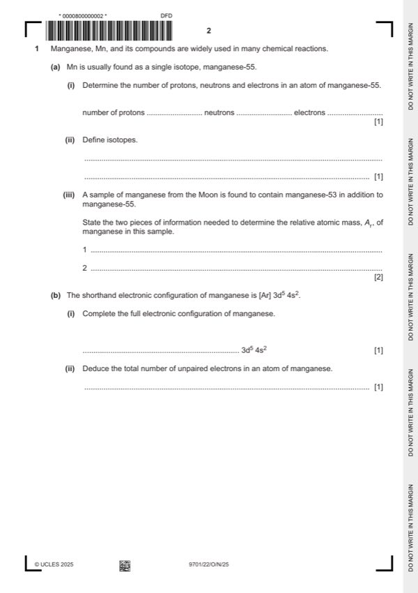

Question 1

Original paper page 2
Part 1(a)(i) — solution
25 protons 30 neutrons 25 electrons 1
Mark points
- Include the ideas shown in the solution above.
Part 1(a)(ii) — solution
(atoms of an element) with the same number of protons and different number of neutrons 1
Mark points
- Include the ideas shown in the solution above.
Part 1(a)(iii) — solution
Answer: OR (relative isotopic) mass of Mn-55 and Mn-53
- [M1] (relative) isotopic mass. 2
- [M2] (relative) abundance of each isotope
Mark points
- [M1] (relative) isotopic mass. 2
- [M2] (relative) abundance of each isotope
Part 1(b)(i) — solution
- 1s2 2s2 2p6 3s2 3p6 (3d5 4s2) 1
Mark points
- 1s2 2s2 2p6 3s2 3p6 (3d5 4s2) 1
Part 1(b)(ii) — solution
Answer: 5 1
5 1
Mark points
- Correct result: 5 1
Part 1(c)(i) — solution
Mn / MnO2 AND it gains electrons 1
Mark points
- Include the ideas shown in the solution above.
Part 1(c)(ii) — solution
(+)4 1
Mark points
- Include the ideas shown in the solution above.
Part 1(c)(iii) — solution
Due to an issue with question 1(c)(iii), the question has been removed from the question paper. N/A
Mark points
- Include the ideas shown in the solution above.